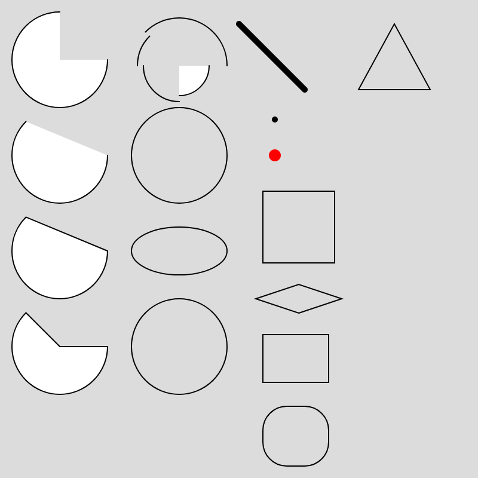

WEEK 2
Drawing with Basic Shapes

function setup() {
createCanvas(400, 400);
noLoop();
}
function draw() {
background(220);
// arc(x, y, w, h, start, stop, [mode], [detail])
arc(50, 50, 80, 80, 0, PI + HALF_PI);
arc(50, 130, 80, 80, 0, PI + QUARTER_PI, OPEN);
arc(50, 210, 80, 80, 0, PI + QUARTER_PI, CHORD);
arc(50, 290, 80, 80, 0, PI + QUARTER_PI, PIE);
// Bottom-right.
arc(150, 55, 50, 50, 0, HALF_PI);
noFill();
// Bottom-left.
arc(150, 55, 60, 60, HALF_PI, PI);
// Top-left.
arc(150, 55, 70, 70, PI, PI + QUARTER_PI);
// Top-right.
arc(150, 55, 80, 80, PI + QUARTER_PI, TWO_PI);
ellipse(150, 130, 80);
ellipse(150, 210, 80, 40);
// circle(x, y, d)
circle(150, 290, 80);
strokeWeight(5);
line(200, 20, 255, 75);
// point(x, y, [z])
point(230, 100);
stroke('red');
strokeWeight(10);
point(230, 130);
stroke('black');
strokeWeight(1);
// quad(x1, y1, x2, y2, x3, y3, x4, y4, [detailX], [detailY])
quad(220, 160, 280, 160, 280, 220, 220, 220);
quad(250, 262, 286, 250, 250, 238, 214, 250);
// rect(x, y, w, [h], [tl], [tr], [br], [bl])
rect(220, 280, 55, 40);
// Give all corners a radius of 20.
rect(220, 340, 55, 50, 20);
// triangle(x1, y1, x2, y2, x3, y3)
triangle(300, 75, 330, 20, 360, 75);
}